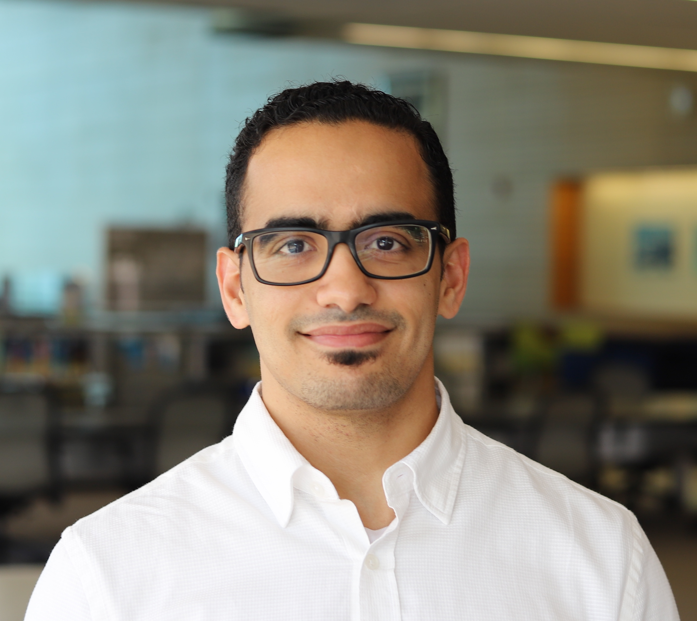

01.
GPS-Denied Localization & Navigation
Developing reliable position and orientation estimation methods for autonomous systems operating in environments with limited or unavailable satellite navigation.
I develop methods that enable autonomous systems to localize and navigate reliably when GPS is unavailable or unreliable.
My work combines mathematical modeling, sensing, and machine learning to address challenging problems in robotics.

I am a Postdoctoral Scholar in Electrical Engineering at the California Institute of Technology (Caltech), working with Professor Babak Hassibi and supported by the Ibn Rushd Postdoctoral Fellowship from KAUST.
I received my Ph.D. from King Abdullah University of Science and Technology (KAUST). Before joining Caltech, I worked as a Research Engineer at Aramco Research Center, where I contributed to sensing and localization technologies for robotic inspection systems.
My experience across academia and industry has shaped my interest in developing mathematically rigorous methods that address practical engineering challenges.
My research spans four interconnected areas, combining mathematical estimation techniques with sensing and learning for autonomous systems.
Developing reliable position and orientation estimation methods for autonomous systems operating in environments with limited or unavailable satellite navigation.
Developing filtering and optimization algorithms that exploit the geometric structure of state spaces, including Riemannian manifolds and Lie groups, while combining measurements from multiple sensors.
Designing accurate ultrasonic ranging techniques using coded waveforms, Doppler-aware processing, and statistical estimation theory.
Investigating the integration of machine learning with model-based estimation to improve adaptability and robustness under uncertain operating conditions.
Publications spanning geometric estimation, Riemannian optimization, acoustic sensing, and high-accuracy localization.
Mohammed H. AlSharif, Ahmed Douik, Mohanad Ahmed, Tareq Y. Al-Naffouri, Babak Hassibi
IEEE Transactions on Signal Processing, vol. 69, pp. 5078–5093, 2021.
Journal PaperMohammed H. AlSharif, Mohanad Ahmed, Mohamed Siala, Tareq Y. Al-Naffouri
arXiv:2409.01002, 2024.
PreprintConducting research with Professor Babak Hassibi, contributing to journal manuscripts and developing new directions in geometric estimation and statistical signal processing.
Developed sensing and localization methods for robotic pipeline inspection, contributing to award-recognized research projects.
Conducted research on high-accuracy indoor localization using manifold optimization.
Investigated ultrasonic ranging, indoor localization, and inertial sensor integration, with an emphasis on high-accuracy estimation.
I designed and teach this graduate-level course as the sole instructor, with responsibility for the curriculum, lectures, assignments, and assessments.
California Institute of Technology
Electrical Engineering
Mentored a master's student through research development and thesis preparation.
I welcome discussions about research collaborations and academic opportunities in autonomous systems, geometric optimization, and sensor fusion.